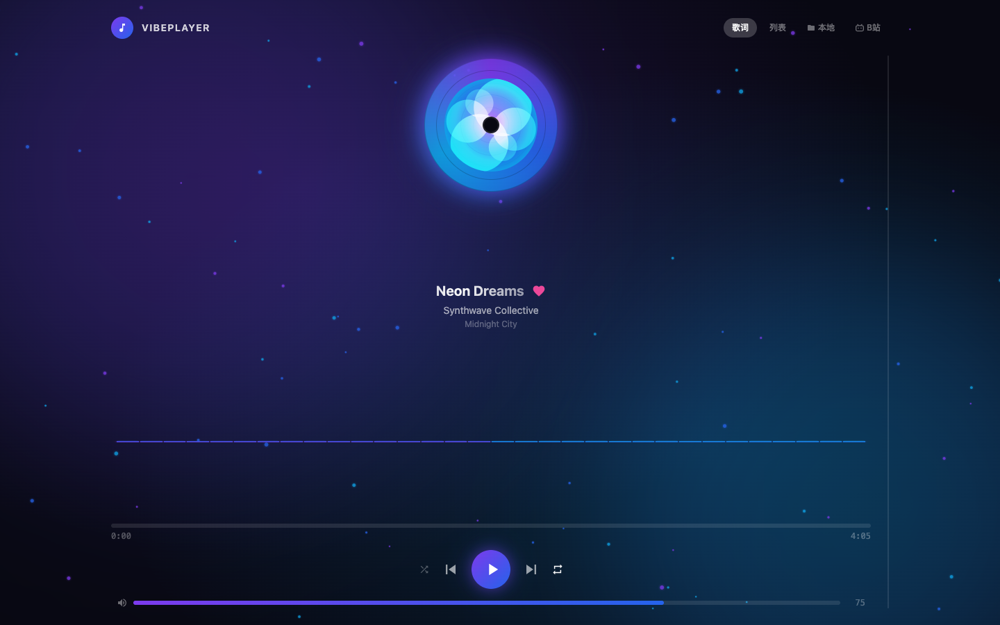
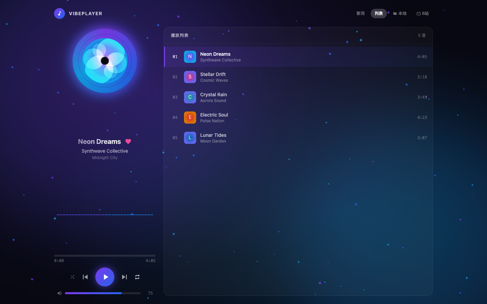
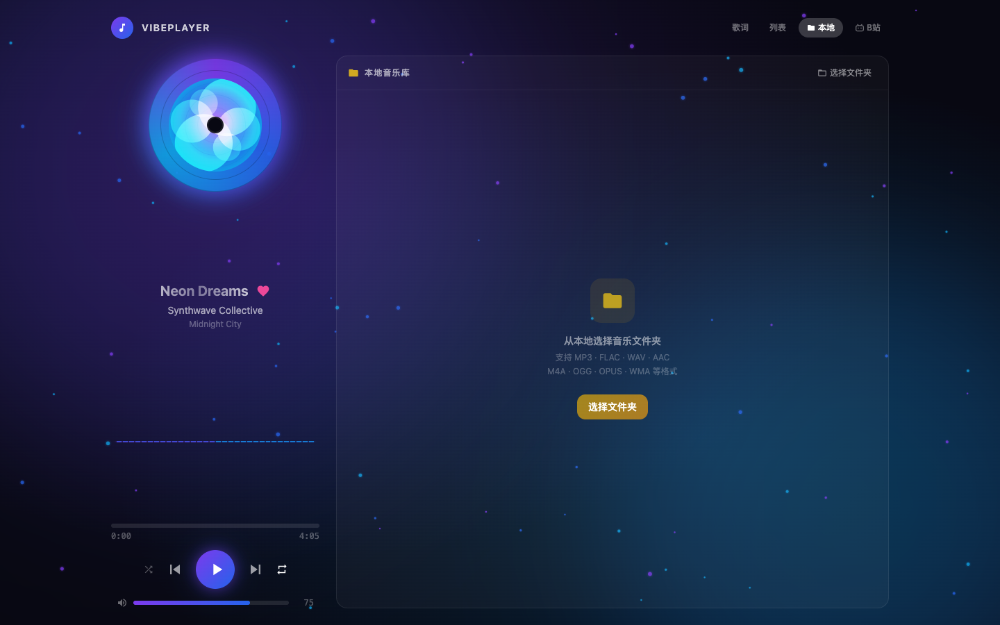
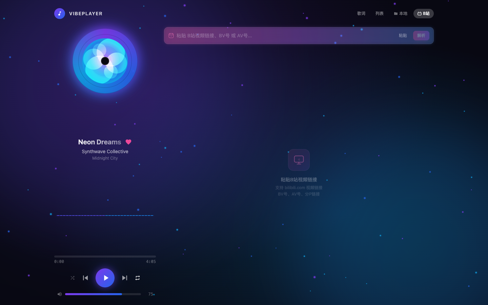

🎵 VibePlayer
一个视觉震撼的 Web 音乐播放器，集成粒子特效、频谱可视化和多源播放
✨ 功能概览
| 功能 | 描述 |
|---|---|
| 🌌 粒子背景特效 | Canvas 实时渲染的浮动粒子，播放时自动生成，带发光拖尾效果 |
| 💿 黑胶唱片动画 | 播放时自动旋转，暂停时静止，配有锥形渐变纹理和动态光晕 |
| 📊 频谱可视化 | 32 条彩色频谱条，播放时随机律动，颜色跟随歌曲主题变化 |
| 🎤 歌词同步高亮 | 当前行高亮 + 渐变发光文字效果，自动滚动跟随播放进度 |
| 📋 播放列表管理 | 收藏歌曲、切换播放模式（顺序/随机/单曲循环） |
| 📁 本地音乐库 | 选择本地文件夹，递归扫描并按目录树展示，点击即播 |
| 🎬 哔哩哔哩播放 | 粘贴 B站链接，解析视频信息，内嵌播放器直接观看 |
| 🎬 本地视频库 | 选择本地文件夹，递归扫描视频文件，支持 MP4/MKV/WebM 等格式 |
| 💾 路径持久化 | 自动保存上次打开的文件夹，重启后自动恢复 |
| 🎚️ 完整播放控制 | 进度条拖拽、音量调节、上一首/下一首、播放/暂停 |
🖼️ 界面截图
🎵 主播放界面

主界面包含旋转的黑胶唱片、歌曲信息、频谱可视化、进度条和播放控制。背景使用动态渐变色 + 漂浮粒子特效，颜色随当前歌曲主题自动切换。
📜 歌词面板

默认展示歌词面板，当前播放行以渐变发光效果高亮，歌词自动滚动跟随播放进度。
📋 播放列表

查看完整播放列表，支持收藏标记和一键切歌。当前播放曲目有迷你频谱指示器。
📁 本地音乐库

点击顶部「本地」按钮打开本地音乐库面板。选择文件夹后，自动递归扫描所有支持的音频文件，按目录树结构展示。支持展开/折叠文件夹，点击任意歌曲即可播放。
🎬 哔哩哔哩面板

点击顶部「B站」按钮打开 Bilibili 面板。粘贴 B站视频链接后自动解析，展示视频信息并内嵌播放器。支持播放历史记录。
🎮 操作指南
基本播放
- 播放/暂停：点击底部播放按钮或按
Space - 上一首/下一首：点击前进/后退按钮
- 进度跳转：点击进度条任意位置
- 音量调节：拖动音量滑块或点击喇叭图标静音
播放模式
- 顺序播放：列表循环播放所有歌曲
- 单曲循环：重复播放当前歌曲
- 随机播放：随机选择下一首
面板切换
| 按钮 | 面板 | 说明 |
|---|---|---|
| 歌词 | Lyrics | 歌词同步显示面板 |
| 列表 | Playlist | 播放列表面板 |
| 本地 | Library | 本地音乐库面板 |
| B站 | Bilibili | 哔哩哔哩面板 |
本地音乐库
- 点击顶部「本地」按钮
- 点击「选择文件夹」按钮
- 在系统弹窗中选择音乐文件夹
- 等待扫描完成，目录树自动展示
- 点击左侧箭头展开/折叠文件夹
- 点击歌曲名称即可播放
支持格式：MP3、FLAC、WAV、AAC、M4A、OGG、OPUS、WMA、AIFF、APE
哔哩哔哩播放
- 点击顶部「B站」按钮
- 在输入框中粘贴 B站视频链接
- 点击「解析」按钮或按回车
- 解析成功后显示视频信息 + 内嵌播放器
支持链接格式：完整链接、BV号、AV号、分P链接、手机端链接
🛠️ 技术栈
核心框架
| 技术 | 版本 | 说明 |
|---|---|---|
| React | 19.2 | 前端 UI 框架 |
| TypeScript | 5.9 | 类型安全 |
| Vite | 7.2 | 构建工具 & 开发服务器 |
UI & 样式
| 技术 | 版本 | 说明 |
|---|---|---|
| Tailwind CSS | 3.4 | 原子化 CSS 框架 |
| shadcn/ui | — | 高质量组件库 |
| Radix UI | — | 无障碍原语组件 |
| lucide-react | 0.562 | 图标库 |
特效 & 可视化（自研）
| 模块 | 技术 |
|---|---|
| 粒子背景 | HTML5 Canvas + requestAnimationFrame |
| 频谱可视化 | Canvas 2D |
| 黑胶唱片旋转 | CSS Keyframes |
| 歌词高亮 | React 状态驱动 + CSS 渐变 |
🚀 快速开始
环境要求
- Node.js >= 20.19
- npm >= 10
安装 & 运行
# 克隆项目
git clone <repo-url>
cd app
# 安装依赖
npm install
# 启动开发服务器
npm run dev
# 构建生产版本
npm run build启动后访问 http://localhost:5173/ 即可使用。